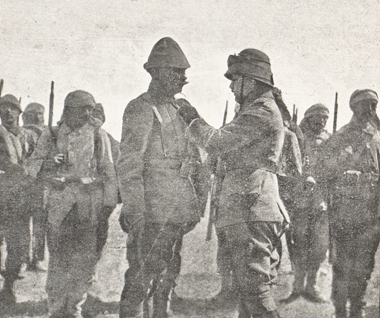

Uçaklarımızın getirdiği haberlerin, bende Mart ayının ilk yarısında bıraktığı izlenime göre İngilizler yakın bir zamanda Gazze’ye taarruz edeceklerdi. Karargâhımla beraber Kudüs’ten Bîrüssebi’ye göç etmiş ve Tellüşşeria’da bir muharebe idare yeri hazırlatmıştım. Meissner Paşa ile mutabık kalarak Kuseyme–Hafirülavce-Bîrisaba kısmından sökülen demiryolu malzemesiyle cepheye yapılacak nakliyatın temini için Et Tine’den Esned ve daha sonra Huç’a bir bağlantı kurulacaktı. Dekovil hattımızı da Tellüşşeria istasyonundan 16. Tümen’in mevzilerine kadar uzatıyorduk. Bu hat esas itibarıyla ağır topçu cephanesinin nakline hizmet edecekti.
Binbaşı Tiller’in komutası altındaki zayıf Gazze garnizonunun takviyesi için 16. Tümen’in 125. Alayı’nı, Avusturya–Macar dağ obüsü taburunu Bîrüssebi’den Gazze’ye almıştım. 10 santimetrelik top bataryasını da aynı şekilde Gazze’ye göndererek düşman harp gemilerini sahilden uzak mesafelerde tutabilecek biçimde mevziye girmesini emretmiştim. Bu tertibat geceleyin yapılmış olduğundan düşmanımıza gösterilmemişti.
Gazze’yi işgal eden kuvvetlerin takviyesi maksadıyla tarafımdan alınan tedbirlere maalesef ordu komutanlığınca onay verilmemişti. Bir Türk alayı komutanının bir Alman binbaşısı emrine verilmesinin uygun olamayacağı zannediliyor ve bana aldığım tertibatın geri alınması emrediliyordu. Şimdiye kadar alınan tertibatın aksine, Gazze’ye yapılacak bir düşman taarruzunda şehrin tutulmayacağı, bilakis garnizonun, şehrin on kilometre kuzeydoğusunda henüz hazırlanmamış bir mevziye geriye alınması emrediliyordu. Ordu komutanlığındaki subaylarda ne işe yarayan bir harita vardı ve ne de onlardan birisi Gazze ve civarında bulunan arazinin keşfi için bizzat faaliyette bulunmuştu. Kanaatime göre uygulanması halinde bir felâket doğuracağı muhakkak olan bu tertibatın ordu komutanlığı tarafından alınmasının sebebi ancak bu şekilde açıklanabilir.
Hem iş hem de şahıslarla ilgili sebeplerden dolayı ordu komutanlığının işlerime bu gibi müdahalesini kabul edemediğimden ve bu husustaki makul itirazlarımın da tesir yapabileceğine inanmadığımdan benim için çok hoş olmayan bir yönteme başvurarak, Cemal’den vazifemden affımı rica etmeye mecbur kalmıştım. Cemal’e çektiğim telgrafta şöyle demiştim:
“İcraatıma ordu komutanlığının sürekli müdahaleleri, komutanlığın artık güvenine mazhar olamadığıma delil teşkil eder. Bu şartlar altında vazifemin başka bir subaya verilmesinin daha makul olacağını zannediyorum”.
Acele aldığım bir karşılık telgrafta Paşa; hakkımdaki güvenini belirtmekte ve arada bir yanlış anlama olduğuna ve kendisinin emir vermeyip yalnız bir tavsiyede bulunduğuna ve doğru bulduğum takdirde de, aldığım tedbirleri uygulayabileceğime işaret etmekteydi.
Bununla beraber en sonunda kendi arzusunu kabul ettirebilmek için o aralık cepheye gelmiş olan 53. Tümen komutanının Gazze müdafaasını üstlenmesini ordu komutanı emretmişti. Düşman taarruzunun arefesinde bulunulduğu bir zamanda bölgeyi ve civarını iyice tanıyan bir komutanın bütün hal ve şartlara yabancı olan diğer biriyle değiştirilmesinden doğabilecek olumsuz sonuçları bildiğim halde ben bu emre itiraz edemezdim.
Yukarıda anlatıldığı şekilde fikir ayrılıkları ve bunların doğurduğu pürüzler, bütün ittifak harplerinin herhalde kaçınılması mümkün olmayan neticelerindendir. Fakat şunu da itiraf etmeliyim ki, Cemal’in çevresinde bize karşı düşman unsurlarla yapılan sessiz savaş sinirlerimi, üstün İngiliz kuvvetleri ve biz Avrupalılar için yabancı iklim şartlarıyla yaptığımız savaşlardan çok daha fazla harap etmişti.
24 Mart’ta Ordu Komutanlığı, Yafa ile Remle arasında bulunan 53. Tümen’e mümkün olabilen süratle sahil boyunca Gazze’ye yürümesini emretmişti.
Eski bir şehir olan Gazze, geniş hurma, incir, zeytin ve portakal bahçelerinin ortasında suyu bol bir vahadır. Eski zamanlarda Gazze bir sahil şehri olup Petra üzerinden geçen kervan yolundan sevkolunan Arabistan mahsulâtının ve Güney Filistin’in zengin arpa istihsalatının bir aktarma mahallini teşkil ediyordu. Halen üç ilâ dört kilometrelik büyük kumluk arazinin oluşturduğu bir kuşak Gazze şehrini sahilden ayırmaktadır. Akdeniz yüzlerce seneden beri bu kumları yığmış ve buna ağaçlandırma veyahut diğer inşaatla müdahale edilmemiş olduğundan bugün de bu kumluklar sahilden içeriye doğru olan seyirlerine devam etmişlerdir. Gazze eskiden beri sahip olduğu önemini su servetine borçludur. Bir sahil ve ticaret şehri olmaya son verdiği halde sahil boyunca Mısır’a giden kervan yolunun başlangıcı olması itibarıyla önemi hiçbir vakit düşmemiştir. Harbin başında Gazze 35–40 bin nüfuslu sakin bir doğu şehri idi. Şehrin surları zaman aşımıyla kaybolmuş ve şehrin eski öneminin yegâne şahidi olarak eski ve azametli cami kalmıştı. Yirmi ilâ otuz metre derinliğindeki kuyular hafif tuzlu su veriyorlardı.
Şehrin müdafaa kabiliyeti güneye doğru pek iyi olmayıp güneydoğuya karşı daha iyi idi. Bahçeleri kuşatan adam boyunda olan ve içine girilemeyen şabbare (Frenk inciri) denilen dikenli yaprak çitleri doğal engeller oluşturuyordu. Şehrin güneydoğusunda yaklaşık 70 metre yüksekliğinde Cebel-i Ali Muntar denilen bir tepe bulunuyordu. Geniş bir kabristanın ortasında bulunan bir türbeden şehre ve bunun doğusunda ve güneyinde bulunan araziye hâkim bir manzara vardı. 1799’da Napoleon, Ali Muntar’dan Gazze üzerine yaptığı taarruzu idare etmişti. Bu tepe Türk mevziinin anahtarı yerindeydi ve onu elinde bulunduran şehre hâkim oluyordu.
Elinde bulunan zayıf vasıtalarla Binbaşı Tiller, yalnız Gazze’nin güney cephesiyle Ali Muntar’da birkaç basit tahkimat yaptırmıştı. Tel örgüsü engelleri burada yoktu.
25 Mart’ta karargâhımla beraber Bîrüssebi’den Tellüşşe-ria’ya geçmiştim. Ertesi günü burada lâtif bir ilkbahar gününde çadırlarımızın önünde büro işleriyle meşgul oluyor ve sabırsızlıkla sabah keşfi için uçan pilotumuzun dönüşünü bekliyorduk. Sık sık olduğu üzere bir kere daha Gazze ile tel irtibatı kesilmiş ve Binbaşı Tiller’in sabah raporu alınamamıştı. Saat dokuza doğru nihayet uçağımız görünmüştü; birkaç dakika sonra uçak zarif bir kayma inişiyle ordugâhın çok yakınında hazırlanmış olan muharebe iniş yerine konmuştu.
“İngilizler bir piyade tümeni ile Gazze istikametinde Gazze Vadisi’ni geçmişler ve iki atlı tümeni ile El Ariş üzerinden El Havadi’ye doğru ilerlemektedirler. Hanyunus ile Şelâle arasındaki arazide düşman yoktur.”
Bu haber gerek benim gerekse karargâh subaylarımın kalplerine su serpmişti. Beklenilen bir taarruzdan evvel komutanın ve kıtanın sinirleri üzerinde bilinmezlik kadar hiçbir şey ağır tesir yapmaz. Bu haber üzerine derhal Cemame, Tellüşşeria ve Bîrüssebi gruplarına silâhbaşı ettirmiş ve Gazze üzerine ileri harekete hazır bulunmaları emrini vermiştim. Esaslı sözlü talimat ve yazılı emirlerle ast komutanlarımın olabilecek hallare karşı alınması gerekli olan tedbirler hakkında dikkatlerini çekmiştim. Gerekli olan keşifler tertip ve icra edilmiş bulunuyordu.
Tiller’in telsizle gönderdiği bir haber uçak raporunu teyit etmiş ve saat 11’de Tiller, İngiliz süvarilerinin Gazze’yi doğudan sarmakta olduklarını ve halen Gazze’den Dir Esned üzerinden Yafa’ya giden yola yaklaştıklarını ve düşman piyadesinin taarruz ağırlık merkezini Ali Muntar’a yönelmiş gibi göründüğünü bildirmişti.
Artık düşmanın ciddî maksadından şüphe edilemezdi ve ben Cemame grubuna (3. Tümen, bir alayı hariç) Gazze’nin kuzey ve doğusunda bulunan düşmana geriden taarruz emrini vermiştim. Bunun için bu grup emrine Mecdel’den Gazze üzerine yürümekte olan 53. Tümen’in 163. Alayı verilmişti. Tellüşşeria grubuna da (16. Tümen, bir alayı hariç) sola doğru kuvvetli kademe teşkil ederek Tellüşşeria–Gazze yolu boyunca ilerlemesini emretmiştim. Bu tümen bütün ağırlıklarını alacak ve zayıflığı hakkında düşmanı aldatacak bir düzenle yürüyecekti. Buna göre yetişilecek yakınlıkta bulunan bütün birlikler Gazze’ye taarruz eden düşmanın yan ve gerilerine yönelmiş bulunuyordu. Binbaşı Tiller’e de, kendi yükünü hafifletmek için sevkedilen birliklerin tesirini hissedinceye kadar Gazze’yi kesin olarak müdafaa ve muhafaza etmesi emri verilmişti.
Herhalde Türk kurmayının iyi yetişmemiş olması ve Türk birliklerinin manevra kabiliyetlerinin azlığı gibi sebeplerinden dolayı Cemame grubu ancak 14.30’da ve Tellüşşeria grubu da 16.30’da yürüyüşe hazır bir hale gelebilmişlerdi. Bu gibi gecikmelerle tabiidir ki Gazze önünde tasarladığım karşı taarruz hesaba katılamazdı.
İngilizlerin doğu kuvvetleri komutanı Tümgeneral Sir Charles Dobell, kendi emri altında bulunan çöl kolu komutanı Tümgeneral Sir Philip Chetwode’e 26 Mart’ta Gazze’nin işgalini emretmişti. Chetwode’un elinde 53. Piyade Tümeni, Anzak Tümeni (bir tugay hariç) atlı tümen (bir tugay hariç) Hecinsüvar tugayı ki 18.000 tüfek, 26 hafif ve 6 ağır top vardı. 52. Tümen’le (8.000 tüfek 44 top), 54. Tümen’i (8.000 tüfek 12 top) General Dobell kendi emrinde alıkoymuştu. İngilizler Gazze garnizonunu 4.000 tüfek ve 20 kadar top tahmin etmişlerdi. Hakikatte ise Tiller’in emrinde 2600 tüfek ve 12 hafif ve 2 ağır top bulunuyordu. Bütün emrim altına bulunan birliklerin kuvveti 12.700 tüfek, 980 mızrak, 36 hafif ve 10 ağır toptan ibaretti.
General Dobell, henüz Şelâle mevziimizin ansızın tahliyesinin tesiri altında bulunuyor ve bizim, kat’i bir muharebeden tekrar sıyrılacağımızdan korkuyordu. Bu sebepten o, Gazze’ye yapılması düşünülen taarruzun mümkün olduğu kadar çabuk gerçekleşmesini istiyordu.
İngilizlerin atlı birlikleri, 26 Mart sabahı saat 2.30’da Dir el Ballah civarındaki ordugâhlarından hareket ederek El Adyar civarında henüz içinde su akan Gazze vadisini geçmişlerdi. Yoğun bir sis yön bulmayı güçleştiriyordu; bu sebepten İngiliz kurmayının niyet ve maksadındaki hatalar neticesinde duraklamalar ve birbirleriyle çatışmalar vukua gelmiş ve sabahleyin saat altıda sis açıldığı vakit en önde bulunan İmperial atlı tümeninin sonuncusu henüz El Maşrafe civarına ulaşabilmişti. Bu tümenin vazifesi Gazze’ye yapılacak taarruzu, Tellüşşeria ve Cemame’de bulunduğu tespit edilen Türk kuvvetlerine karşı örtmekti. Bu maksat için tümen büyük kısmı ile Huç civarına yürümüştü. Bu esnada bu tümenin eline, muhtelif gruplarımız arasında gidip gelen birçok büyük ve küçük Türk nakliye kollarıyla beraber maalesef artezyen kuyusu açmaya memur olan kolumuz da esir düşmüştü. Bunun gibi yakalayabildikleri bütün Bedevî ve Fellahları da İngiliz süvarileri sürükleyip götürmüşlerdi. İşte bütün bunlar General Dobell’in daha sonra neşrettiği tebliğde bildirilen esirlerin büyük kısmını teşkil ediyordu.
General Chetwode; Anzak tümenine, Gazze garnizonunun çekilmesine mani olmak için Gazze şehrinin kuzey ve doğudan kuşatılmasını emretmişti. Bu tümen yaklaşık altı kilometrelik bir mesafede Gazze’yi geçerek doğru Cabalya’ya kadar yürümüş ve buradan sağ kanadını tedricen sahile kadar uzatmıştı. Bataryalarını da Cabalya’nın doğusunda cephesi Gazze’ye yönelik olarak mevziye sokmuş ve emniyeti için zırhlı otomobilli birkaç süvari bölüğünü Dir Esned istikametine göndermişti. İşte bu bölüklerin eline, ordu komutanlığının emrini yerine getirmek üzere maiyetinden birkaç subayla birlikte hiçbir şeyden haberi olmaksızın beygir koşulu bir araba içerisinde Binbaşı Tiller’den komutanlığı devralmak üzere Gazze’ye gelmekte olan 53. Türk Tümeni’nin komutanı esir düşmüştü. İngilizler, bir Türk tümen komutanının esir edildiğini bu kadar gururla ilan etmiş olmalarında bilmem haklı mıydılar? Bu zatın komutanlık vasıflarını yakından incelemeye lüzum görmeksizin, sanırım ki, şayet Binbaşı Tiller’in yerinde, esir alınan Türk komutanı bulunup da Gazze müdafaasını o sevk ve idare etmiş olsaydı, düşmanlarımız için herhalde daha hayırlı olurdu.[11]
Atlı birliklerin gerisinde 53. İngiliz Tümeni Gazze vadisini geçmiş ve Mansura civarında Gazze’nin güney cephesinde taarruza hazırlanmıştı. Bu tümenin batısında zayıf bir İngiliz müfrezesi denize kadar olan çemberi kapatmaktaydı. Bütün İngiliz birliklerinin Gazze Vadisi’ni aynı geçitten geçmeleri dikkat çekicidir. Herhalde başka geçitler yapılmasının dikkatimizi çekeceğinden korkulmaktaydı.
Hecinsüvar Tugayı 53. Tümen’in sağ yanını emniyette bulundurmak için başlangıçta Tel Cemma civarında tertibat almıştı. 54. Tümeni General Dobell 53. Tümen’e dayanak oluşturmak üzere Gazze Vadisi’nden ileri çektiği halde 52. Tümen’i bu kısmın güneyinde kendi emri altında bulundurmuştu.
General Chetwode’un tertibatına göre 53. Tümen daha sabahın erken saatlerinde taarruza geçecekti. Fakat tıpkı bizde olduğu gibi düşman nezdinde de pürüzler ve anlaşamamazlıkların vuku bulduğu anlaşılıyor ve iki tugayıyla ilk hatta bu tümen Ali Muntar istikametinde taarruza geçinceye kadar hemen, hemen öğle vakti olmuştu. Bu tümenin piyadeleri takdire değer bir cesaret ve büyük bir şiddet ve süratle ilerlemekte idiler; fakat zamana uymayan sık nizam halindeki bu hareket, mevzilerimizin önündeki açık araziden iyi idare edilen top ve makineli tüfeklerimizin ateşiyle ağır zayiata maruz kalmış ve müsait olmayan tarassut şartları altında bulunan topçularının yetersiz himayesinden dolayı oldukları yerde kalmışlar ve ne sağ kanada konulan tümenin üçüncü tugayı ve ne de cephenin ilerisine sürülen 54. Tümen’den diğer bir tugay bunları hücum mesafelerine kadar ileriye sürükleyebilmişti. Yalnız cepheden yapılacak bir taarruzla, Ali Muhtar’ın cesur savunucuları hiçbir vakit mevzilerini terke mecbur edilemeyecekti.
Fakat saat 13’te 53. Tümen’in ilerleyemediğini gören General Chetwode, Anzak tümenine üç tugayıyla yaya olarak Gazze’nin tahkim edilmemiş olan kuzey ve kuzeydoğu cephelerine taarruz emrini vermişti. Binbaşı Tiller’in elinde bu cepheleri de tahkim edebilmek için ne vasıta ve ne de zaman vardı. Gerisiyle yanına yapılan bu taarruz belli olur olmaz Tiller, ihtiyatlarını muharebeye sokmuş ise de bunlar bahçelerin ve kaktüs (şabbare) çitlerinin arasından ilerleyinceye kadar Avustralyalılarla Yeni Zelandalı süvariler açık olan düzlüğü geçmiş bulunuyorlardı. Az zayiatla bunlar topçu ateşimizden sıyrılmışlar ve ilerisini görmenin mümkün olmadığı şehrin kuzeydoğu cephesinin bahçelik arazisinde göğüs göğüse çetin bir muharebeye tutuşmuşlardı. Tiller’in yedi piyade taburu 10 km’den 12 km’ye kadar uzayan bir cepheye taksim edilmiş olduğundan İngilizler Ali Muntar’ın kuzeyindeki bahçelerde ileriye doğru yavaş yavaş arazi kazanmaktaydılar. Onlar burada önce Türk bataryalarından birisinin üzerine atılmışlar fakat topçu numara erleri iki topu emniyet altına almaya muvaffak olmuşlarsa da diğer ikisi düşmanın eline geçmişti. Bundan sonra Avustralya süvarileri Ali Muntar’ın kuzey cephesine yönelmişlerdi. Gerilerinden gelen ani bir taarruz karşısında savunmacılar mukavemet edememiş ve bunlardan bazıları İngiliz süngülerinin kurbanı olmuş ve diğer bir kısmı da muharebe ederek, şehrin esas doğu cephesinde ast komutanlarıyla birlikte yeni bir müdafaa tanzim etmekte olan Binbaşı Tiller’in yanına gelmişlerdi.
Avusturya–Macaristan dağ obüs bataryalarının komutanı olan Yüzbaşı Von Truzschewski, Ali Muntar tepesinde bulunan tarassut mevziinde son ana kadar mukavemet ederek, iyi atışlarıyla kendini göstermiş ve bataryalarının atışını idare etmişti. Kendi yaveriyle beraber tarassut mevkiini terk etmek üzereyken hücum eden İngilizler tarafından öldürülmüş ve yaveri de ağır surette yaralanmıştı. Cesur bir asker, mükemmel bir topçu, çok saygı değer bir arkadaş olarak herkesin hürmet ve muhabbetini kazanmış olan Truzschewski’nin ölümü bizim için büyük zayiattandı. Birçok defa Avusturya–Macar müttefikimizin başarma kabiliyetlerine yüklemiş olduğum en ağır vazifeler dolayısıyla bunlarla aramızdaki münasebetlerin hiçbir vakit en ufak bir bulanıklık dahi göstermemesini herhalde Yüzbaşı Truzs-chewski’nin iyi niyetli arkadaşlığına borçluyuz.
Gece olduğu vakit İngilizlerin 53. Tümeni Ali Muntar’ı ele geçirmişti. Fakat çok sıcak olan muharebe günü İngilizleri de bitkin bir hale getirmiş ve ilerisini görmenin mümkün olmadığı bahçelik arazide kendi birlikleri fazlasıyla birbirine karışmış olduğundan başlangıçta taarruza devam etmeyi düşünmemişlerdi.
Akşam saatlerinde Binbaşı Tiller, benim kendisine göndermeyi vaad ettiğim 3. ve 16. Tümen’in kollarını gözlemekte bulunuyordu. Daha o vakit kendisinin etrafında, daha fazla mukavemetten hiçbir şey ümit edilemeyeceğine ve teslim olmaya dair sesler duyulmaya başlamıştı. Kendi durumunun zorluğuna rağmen Tiller’in sarsılmaması ve bütün bu gibi tavsiye ve nasihatleri kesin olarak reddetmesi, onun o günlerde yapmış olduğu hizmetlerin herhalde en büyüğüdür.
Bu sırada 3. ve 16. Türk tümenlerinde neler olmuştu?
Seferî Kuvvetler Komutanlığı tarafından sürekli zorlanan 3. Tümen, nihayet saat 15’te yola çıkmış ve daha birkaç kilometrelik bir yürüyüşten sonra Huç’un güney taraflarında topçu ve makineli tüfeklerle takviyeli iki düşman süvari tugayı ile çatışmıştı. Bunlar İmperial Atlı Tümeni’ydi. İngilizler arazinin müsait olmasından pek mahirane istifade etmişler ve pek çok defa cephenin önünde görünerek ve Türk tümeninin yanlarına taarruz ederek tümeni sık sık yayılmaya ve cepheyi değiştirmeye mecbur etmeyi bilmişlerdi. Bundan dolayı tümenin ileriye hareketi o kadar yavaşlamıştı ki, karanlık bastığı zaman tümen daha Huç’un ancak iki kilometre batısında bulunuyordu.
16. Tümen ise hafif düşman mukavemetiyle karşılaşmış ve karanlık basmazdan evvel Resm et Atavine civarındaki 139 rakımlı tepeyi işgal etmişti. Bîrüssebi grubu da öğleden sonraki geç saatlerde Abu Suhelman’ın batı taraflarına ulaşmış ve saat 22’de Şeyh Nuran istikametinde yürüyüşe devam edeceğini haber vermişti.
26 Mart akşamı Tiller bana telsizle İngilizlerin, kendi mevzilerinden bir kısmını zapt ve bunların gerisinde bulunan bataryalarını ele geçirdiklerini ve kuzeyden, doğudan ve güneydoğudan şehre girdiklerini ve muharebenin devam edeceğini fakat derhal yükünün hafifletilmesinin kesin olarak gerektiğini bildirmişti. Benim maksadım da 3. ve 16. Tümenleri Gazze üzerine geceleyin yürüyüşlerine devam ettirmek idiyse de, 3. Tümen komutanı akşam saatlerindeki muharebelerde kıtalarının tamamen elinden çıktığını haber vermesi üzerine bundan vazgeçmeye mecbur olmuştum. Bunun üzerine tümenlerin aydınlık basmazdan önce yürüyüşe başlayarak mümkün olabilen süratle ilerlemelerini ve düşmanı nerede bulurlarsa ona taarruz etmelerini emretmiştim. 3. Tümen’e ve bunun emrine verilmiş olan 163. Alay’a Gazze istikameti ve 16. Tümen’e de Gazze’nin güneyinde El Mansur istikameti verilmişti. 16. Tümen’in sol kanadının emniyeti için Bîrüssebi grubu Tel Cemma’nın doğu taraflarına alınmıştı.
Saat 4.45’te Binbaşı Tiller düşmanın eline sağlam bir halde geçmemesi için telsiz istasyonunu tahrip edeceğini telsizle bildirmişti. Bu çok az ümit verici haber, Tellüş-şeria’daki muharebe idare yerimizde 27 Mart öğleye kadar aldığımız güvenilir son haberdi. Muharebe malzemesi bakımından çok kötü olan teçhizatımız, ilerlemekte bulunan tümenlerle telefon hattı tesisine bile müsaade etmiyordu. Gazze Grubu’nun akıbeti hakkında bu muharebe idare yerimizde geçen heyecanlı, sinirleri kemiren bekleme, endişe ve bilinmezlik saatleri bize nihayetsiz geliyor ve Gazze istikametinden akseden şiddetli top seslerinden muharebenin cereyanı hakkında beyhude yere neticeler çıkarmaya çalışıyorduk. Kudüs’teki ordu karargâhının da muharebenin durumu hakkında sürekli bilgi istemesi orada da sinirlerin son derece gergin olduğuna delâlet ediyordu. Eski zamanlarda komutanlar muharebe meydanını görerek kendi şahsî gözlemlerine göre emirlerini verirlerdi. Fakat bugün komutan muharebe mevkiinin civarındaki kendi uçaklarının iniş meydanına bağlıdır ve ekseriyetle kendisine gelen ve daima astlarının şahsî gözlemlerine dayanan haberleri sonsuza dek beklemek ve sonunda bunlardan muharebenin cereyanı hakkında yaklaşık bir fikir edinerek buna göre kendi karar ve emirlerini vermek mecburiyetindedir.
Öğleye doğru uçakla gelen bir haber, Gazze’nin güney kısmında topçu ateşinin olduğu, kuş bakışıyla görülmesine imkân olmayan Gazze civarındaki arazide her iki tarafın hatlarının tespitine imkân olmadığını haber veriyor ve bu da Tiller’in henüz şehri müdafaa etmekte olduğunu ümit ettiriyordu. Uçağımız yeniden uçmağa mecburdu ve bir saat sonra düşman tarafında geriye doğru hareketlerin belirdiği hakkında kalplerimize ferahlık veren haberi almıştık.
General Chetwode gibi, muharebe idare yerini, Es Seitavi gerisinde tesis etmiş olan General Dobell’e 26 Mart’ta saat 16 ile 18 arasında, 163. Türk Alayı’nın Dir Esned’e ve 3. ile 16. Tümenlerin de Gazze’ye doğru ilerledikleri haberi geldi. Bu haberler İngiliz komutanına saat 18.19’da muharebeyi kesmek emrini verdirmeye sebep olmuştu. Her ne kadar General, 52. Tümen’le 54. Tümen’in büyük kısmını muharebeye sokmamışsa da Gazze üzerine yaptığı taarruzu icrada kendisinin yan ve gerisinden kuvvetli surette tehdit edilmekte olduğunu zannetmişti. General Dobell, muharebeyi kesmek kararını verdiği vakit Ali Muntar henüz İngilizlerin eline geçmemişti. Her halde düşmanımız tarafından atlı birliklerin, düşmanın yan ve gerilerine saldırılması suretiyle birçok defalar muvaffakıyetle tatbik edilmekte olan strateji, sonuçta kendi geri çekilme yolunun tehlikeli bir surette tehdit edilmesine sebep olduğunu göstermişti. Bunun gibi General Dobell’in muharebeyi kesmek kararına, hayvanlarının bütün bir sıcak günde ve büyük ihtimalle akşama kadar, vasıl oldukları mevzilerinde susuz kalması önemli ölçüde etki etmişti.
Bu geri çekilme emrinin, zaferi ellerinde bulundurduklarını zanneden ast komutanlarla susuzluk ve meşakkatten muztarip olan birlikler arasında hoşnutsuzluk uyandırdığı ve disipline olumsuz tesir yapmaktan geri kalmamış olduğu anlaşılıyor. Son İngiliz kıtası toplanıncaya ve uzun geri yürüyüşe geçebilinceye kadar gece yarısı olmuştu. Her iki atlı tümen Gazze Vadisi’nin gerisine çekildiği halde 53. ve 54. Tümenler Mansura civarında geriden gelen kıtaları toplamak üzere bir himaye mevzii işgal etmişlerdi. Hecinsüvar tugayı bu mevzii sağ kanatta emniyet altına alacaktı. Bu emirlerin verilip dağıtılmasında yapılan hatalar neticesinde çok önemsiz sayılmayacak düzensizlikler meydana gelmişti.
Gece yarısından evvel General Dobell Kahire’den, Tiller’in bana göndermiş olduğu şifreli telsiz haberini, şifresi çözülmüş olduğu halde almış ve bu haber kendisinde Tiller’in mağlup olduğu ve İngiliz taarruzunun devamı halinde teslim olacağı izlenimini bırakmıştı. Ayrıca kendisine Tellüşşeria ve Cemame üzerinden Gazze üzerine ilerlemekte olan Türk kollarının karanlık basmasıyla beraber yürüyüşleri kestikleri haberi verilmişti. Bu şartlar altında General Dobell, Gazze’nin alınması için yeni bir tecrübe yapmak mecburiyetinde olduğunu zannetmiş ve 53. Tümen’e Ali Muntar’ın keşfini ve düşman elinde olmadığı takdirde yeniden işgal etmesini emretmişti.
General Gallas tarafından ileriye gönderilen keşif müfrezeleri, Binbaşı Tiller’in Ali Muntar üzerine karşı taarruz için ayırdığı 16. Tümen’in 125. Alayı ile çarpışmışlardı. İngilizler bu çatışma ile geriye püskürtülmüş ve General Gallas’da Gazze’yi yeniden zaptetmek teşebbüsünden vazgeçmişti. Bu kararı, o sırada kendi yan ve gerilerinde 16. Tümen’in müdahalesini hissetmekle daha fazla pekişmişti. 3. Türk Tümeni’nin ilerlemesi yine çok fazla gecikmişti. Bu tümen, cephesiyle düşmana karşı açılacağı yerde Gazze’ye karşı cephe açmıştı. Sabahleyin saat 10’da cephesi şehre karşı olmak üzere Gazze’nin birkaç kilometre doğusunda bulunuyordu. 163. Alay bu sırada Gazze’nin kuzey girişine yaklaşıyordu ve Bîrüssebi Grubu da Tel Cemma’ya ulaşmıştı. Bu grubun komutanı karşısında bulunan düşmana taarruz etmek için bir türlü karar verememişti.

Birinci Gazze Muharebesi’nde bir bölük kuvvetiyle beş İngiliz alayını püskürten yüzbaşı, kahraman erleri adına Enver Paşa tarafından Harp Gümüş İmtiyaz Madalyası’yla taltif edilirken.
Türk taarruzunun tazyiki altında İngilizler geri dönmüşler ve muharebe ederek Gazze Vadisi’nin gerisine çekilmişlerdi. 28 Mart gece yarısına kadar son kıtaları bu vadinin gerisine çekilmiş bulunuyordu.
27 Mart günü öğleden sonra Gazze’ye geldiğim zaman şehrin üzerinde yalnız düşmanın hafif topçu ateşi vardı. Binbaşı Tiller’i cesurca mukavemetinden dolayı tebrik edip kendisinden olanlar hakkında tafsilatı rapor aldıktan sonra İngilizlere karşı mukabil taarruza geçip geçmemek gibi zor bir karar karşısında bulunuyordum. Her türlü taarruzdan bizi kayıtsız ve şartsız men eden Cemal’in bir telgrafı beni bu hususta bir karar almaktan kurtarmış bulunuyordu. Paşa, birkaç gün sonra muharebe meydanını teftiş etmek ve kıtalara cesurane müdafaalarından dolayı teşekkür etmek için cepheye geldiği vakit beni, işlerime yapmış olduğu yeni müdahalesinden dolayı canım sıkılmış bir halde görünce bana şöyle demişti:
“Sevgili dostum, emriniz altında bulunan kıtaların Alman değil, talim ve terbiyesi henüz o derece ilerlememiş olan Türk kıtaları olduğunu unutmamalısınız. Müdafaada Türk piyadesinden her şeyi talep edebilirsiniz; fakat taarruzda o, cesur olmakla beraber bu hususta gerekli olan talim ve terbiyeyi görmemiştir. Taarruz hakkındaki Alman düşünceleriniz güzel ve iyidir amma sizinkiler gibi subay ve astsubaylar olursa! Fakat burada siz Türklerle çalışmak mecburiyetinde olduğunuzdan bu husustaki bilgilerinizi değiştirmek mecburiyetindesiniz”.
Cemal, şüphesiz bu sözlerinde haklıydı. Fakat bilgiyi değiştirmek kolay bir iş değildi! Evet, o bilgi ki hemen yirmi sekiz senelik hizmet müddeti içinde hergün işletilmiş ve talimlerle kökleştirilmişti.
General Murray, hükümetine kendi zayiatının 4.000 kişiden aşağı olduğu halde bizimkilerin 6–7 bine ulaştığını bildirmişti. Hakikatte ise biz, Birinci Gazze Muharebesi’nde 36 subay kaybettik; bunların 10’u şehit, 12’si yaralı, 14’ü kayıptı ve 1.391 erden 276’sı şehit, 744’ü yaralı ve 371’i kaybolmuştu. Ölenler arasında bulunan Türk–Alman makineli tüfek bölüğü komutanı Teğmen Cordier’in ölümünü de esefle karşılamıştık. O, Ali Muntar tepesindeki tüfeklerinin ateşinin tesirini tarassut etmek üzere siperlerden fazla dışarıya çıktığı esnada kahramanca maktul düşmüştü.
5 İngiliz subayı ile 241 er –ekserisi yaralı olmak üzere– elimize esir düşmüştü. 40 kadar makineli tüfek, birçok tüfek, 4 otomobil –ki bundan çok fazla memnun olmuştuk– bol miktarda ve mükemmel telefon kablosu ganimet olarak elimize geçmişti.
Bu gibi bir fırsatta ele geçirilen malzemenin bizce ne derece kıymet ve ehemmiyetli olduğunu anlayabilmek için bizim gibi her türlü vasıtadan mahrum bir harp sahnesinde muharebe etmek ve bizdekilerde olduğu gibi kötü giysi ve donanımla teçhiz edilmiş olan kıtalara emir ve komuta etmiş olmak lâzımdır. Şimdiye kadar yalınayak gezen yüzlerce Türk eri nihayet iyi İngiliz çizmelerine sahip olmuşlar ve şimdiye kadar kaput ve velensesi olmayanlar da güzel İngiliz kaputlarının içinde ısınmak zevkini duymuşlardı. Bundan başka makineli tüfek teçhizatımızın noksanından dolayı ele geçirilen ve çoğu kullanılacak bir halde bulunan İngiliz makinelileri kuvvetimizi küçümsenmeyecek derecede artırmıştı.
Gazze’de tesis edilmiş olup haddinden fazla dolmuş olan hastanenin boşaltılması büyük zorluklar göstermişti. Yaralılar sıcaktan ve sineklerden son derece ıstırap çekmekteydiler. Kötü kokan, her türlü sıhhî tesisattan mahrum ve hazırlıksız yapılmış olan bu seyyar hastanelerde tabiplerle hemşirelerin görmüş oldukları büyük hizmetler her türlü övgünün üstündedir.